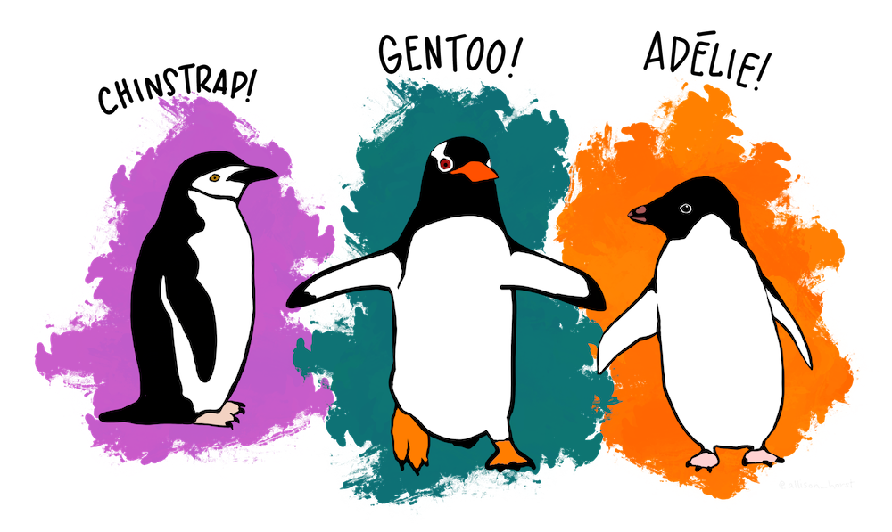
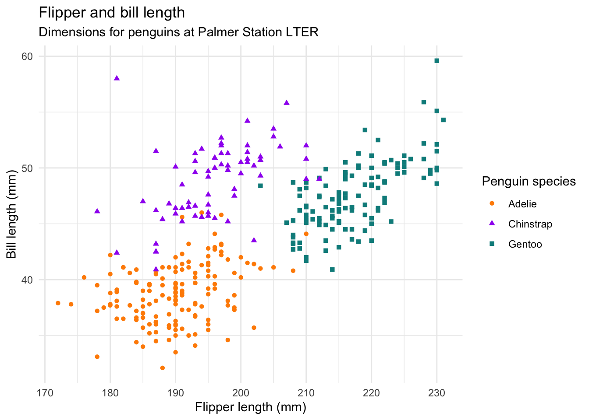

library(tidyverse)
library(palmerpenguins)Hello, Quarto!
Meet Quarto!
Quarto enables you to weave together content and executable code into a finished document. To learn more about Quarto see https://quarto.org.
Meet the penguins

The penguins data from the palmerpenguins package contains size measurements for 344 penguins from three species observed on three islands in the Palmer Archipelago, Antarctica.
Data sets
This package has two datasets.
Includes nesting observations, penguin size data, and isotope measurements from blood samples for adult Adélie, Chinstrap, and Gentoo penguins.
glimpse(penguins_raw)Rows: 344
Columns: 17
$ studyName <chr> "PAL0708", "PAL0708", "PAL0708", "PAL0708", "PAL…
$ `Sample Number` <dbl> 1, 2, 3, 4, 5, 6, 7, 8, 9, 10, 11, 12, 13, 14, 1…
$ Species <chr> "Adelie Penguin (Pygoscelis adeliae)", "Adelie P…
$ Region <chr> "Anvers", "Anvers", "Anvers", "Anvers", "Anvers"…
$ Island <chr> "Torgersen", "Torgersen", "Torgersen", "Torgerse…
$ Stage <chr> "Adult, 1 Egg Stage", "Adult, 1 Egg Stage", "Adu…
$ `Individual ID` <chr> "N1A1", "N1A2", "N2A1", "N2A2", "N3A1", "N3A2", …
$ `Clutch Completion` <chr> "Yes", "Yes", "Yes", "Yes", "Yes", "Yes", "No", …
$ `Date Egg` <date> 2007-11-11, 2007-11-11, 2007-11-16, 2007-11-16,…
$ `Culmen Length (mm)` <dbl> 39.1, 39.5, 40.3, NA, 36.7, 39.3, 38.9, 39.2, 34…
$ `Culmen Depth (mm)` <dbl> 18.7, 17.4, 18.0, NA, 19.3, 20.6, 17.8, 19.6, 18…
$ `Flipper Length (mm)` <dbl> 181, 186, 195, NA, 193, 190, 181, 195, 193, 190,…
$ `Body Mass (g)` <dbl> 3750, 3800, 3250, NA, 3450, 3650, 3625, 4675, 34…
$ Sex <chr> "MALE", "FEMALE", "FEMALE", NA, "FEMALE", "MALE"…
$ `Delta 15 N (o/oo)` <dbl> NA, 8.94956, 8.36821, NA, 8.76651, 8.66496, 9.18…
$ `Delta 13 C (o/oo)` <dbl> NA, -24.69454, -25.33302, NA, -25.32426, -25.298…
$ Comments <chr> "Not enough blood for isotopes.", NA, NA, "Adult…Subset of penguins_raw, includes measurements for penguin species, island in Palmer Archipelago, size (flipper length, body mass, bill dimensions), and sex.
glimpse(penguins)Rows: 344
Columns: 8
$ species <fct> Adelie, Adelie, Adelie, Adelie, Adelie, Adelie, Adel…
$ island <fct> Torgersen, Torgersen, Torgersen, Torgersen, Torgerse…
$ bill_length_mm <dbl> 39.1, 39.5, 40.3, NA, 36.7, 39.3, 38.9, 39.2, 34.1, …
$ bill_depth_mm <dbl> 18.7, 17.4, 18.0, NA, 19.3, 20.6, 17.8, 19.6, 18.1, …
$ flipper_length_mm <int> 181, 186, 195, NA, 193, 190, 181, 195, 193, 190, 186…
$ body_mass_g <int> 3750, 3800, 3250, NA, 3450, 3650, 3625, 4675, 3475, …
$ sex <fct> male, female, female, NA, female, male, female, male…
$ year <int> 2007, 2007, 2007, 2007, 2007, 2007, 2007, 2007, 2007…A first look at penguins
The plot below shows the relationship between flipper and bill lengths of these penguins.
ggplot(penguins,
aes(x = flipper_length_mm, y = bill_length_mm)) +
geom_point(aes(color = species, shape = species)) +
scale_color_manual(values = c("darkorange", "purple", "cyan4")) +
labs(
title = "Flipper and bill length",
subtitle = "Dimensions for penguins at Palmer Station LTER",
x = "Flipper length (mm)",
y = "Bill length (mm)",
color = "Penguin species",
shape = "Penguin species"
) +
theme_minimal()
A slide with two columns
Column 1
Column 2